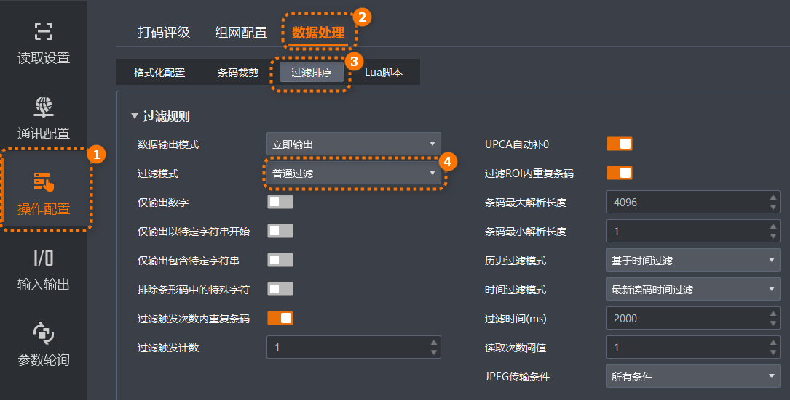

过滤规则模块支持设置普通规则对条码进行简单的过滤操作，适用于基本的筛选需求，例如只需要根据条码长度或固定位置的字符进行过滤的情况。

可配置的参数说明如下。
启用该功能则输出的条码信息为纯数字信息，非数字类信息会被过滤。
启用该功能时，只输出起始位为特定字符的条码信息。若不一致，则条码信息被过滤。启用时，需要在以..开始参数中输入特定字符的内容。
启用该功能时，只输出包含特定字符的条码信息。若不包含，则条码信息被过滤。启用时，需要在特征字符串参数中输入特定字符的内容。通过字符串搜索区域起始位置和字符串搜索区域结束位置参数设置在条码中搜索特征字符串起始和结束位置的序号。
启用该功能时，只输出不包含特定字符的条码信息。若包含，则条码信息被过滤。启用时，需要在排除特定字符串参数中输入特定字符的内容。通过排除字符串搜索区域起始位置和排除字符串搜索区域结束位置参数设置在条码中搜索排除特定字符串起始和结束位置的序号。
此参数用于控制在触发过程中是否实时输出条码读取结果。可选择如下模式：
立即输出：在触发过程中识别到条码时会立即输出读取结果。
整包输出：在触发过程中不输出任何条码读取结果，而是在触发结束后一次性输出所有融合后的条码读取结果。
仅触发模式选择“开启”后，可配置此参数。
此参数用于控制在连续触发过程中，是否对重复读取的条码进行过滤。如果启用此功能，系统会在指定的触发次数内自动去除重复的条码结果，仅保留唯一的条码数据，从而避免重复数据的输出。开启后可通过过滤触发计数参数指定进行重复条码过滤连续触发的次数。
仅触发模式选择“开启”后，可配置此参数。
开启该开关时，通过自动补0，可以确保UPC-A条形码的长度始终为13位。
开启该开关时，对ROI内的条码进行识别和处理时可以去除重复的条码，确保每个条码只被识别一次。
当处的ROI使能开关开启后，可配置此参数。
此参数用于定义读码器从触发开始到输出读码融合结果的最短时间。如果到达设置时间，读码器还未触发结束，则触发结束后输出读码融合结果。
仅触发模式选择“开启”后，且立即输出模式为关闭时，可配置此参数。
设置单个条码最大长度，若条码长度高于该参数的数值，则不能解析条码的内容。
当一张图中有N个条码，最大输出长度为N*条码最大解析长度。
条码最大解析长度参数不限制格式化字符，当一张图中有N个条码且每个条码含有格式化字符时，最大输出长度为“N*（条码长度+格式化字符长度）”。
设置单个条码最小长度，若条码长度低于该参数的数值，则不能解析条码的内容。
根据读码器的历史记录对条码进行过滤，可选择如下模式：
基于时间过滤：设置一个时间间隔，在此时间间隔内只读取新的条码，对再次读取的条码进行忽略。选择此模式可通过时间过滤模式参数设置时间间隔的起点，可选“首次读码时间过滤”或“最新读码时间过滤”，通过过滤时间(ms)参数设置时间间隔。
基于数量过滤：设置一个历史读码数量范围，在此数量范围内只读取新的条码，对再次读取的条码进行忽略。选择此模式可通过配置历史编码最大值参数设置读码数量范围。
设置读码次数阈值，当同一个条码读取结果相同的次数超过该数值时，认为此为有效条码并输出结果；当低于该数值时，则认为此为无效条码且不输出结果。
设置在何种条件下传输JPEG格式的图像数据，可选择如下条件：
所有条件：无论读码结果如何，读码器都会传输JPEG格式的图像数据。
读取条码：当成功读取到条码时，读码器传输JPEG格式的图像数据。
无读取条码：当未读取到条码时，读码器传输JPEG格式的图像数据。